Maquetacion CSS
Gracias al CSS se puede independizar el contenido de un documento HTML de su presentación, esto posibilita una mayor escalabilidad, mayor rendimiento y un mantenimiento más efectivo, a este proceso de diseñar un documento HTML se le conoce como maquetar una página web, haciendo que el código HTML sea el esqueleto y el código CSS sea la disposición y apariencia del layout.
Hoy día la maquetación de un documento HTML por medio de CSS se puede hacer por medio de tres maneras maquetación por medio de la propiedad float y display, Flexbox y Css Grid. La diferencia básica entre CSS Grid Layout y CSS Flexbox Layout es que Flexbox se creó para diseños de una dimensión, en una fila o una columna. En cambio CSS Grid Layout se pensó para el diseño bidimensional, en varias filas y columnas al mismo tiempo.
A continuación, veremos las dos últimas formas de maquetar Flexbox y Css Grid.

Flexbox
Cuando se describe a flexbox como unidimensional destacamos el hecho que flexbox maneja el layout en una sola dimensión a la vez, ya sea como fila o como columna.
Orientacion
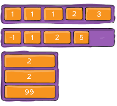Es importante saber que para utilizar flexbox se requiere que el elemento contenedor tenga la propiedad display con valor de flex, todos los item dentro del estecontenedor seguira el flujo, alineacion y justificacion regida por las reglas establecidas por el usuario o en su defecto por lo valores por defecto de cada propiedad.
Justificar Contenido

Alinear Elementos
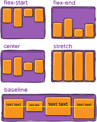Alinear Contenido
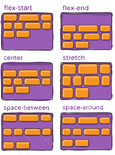Css Grid
CSS Grid es un sistema de diseño bidimensional basado en cuadrículas que tiene como objetivo cambiar completamente la forma en que se diseña interfaces de usuario basadas en cuadrículas (Bidimensional). Al igual que las tablas, el grid layout permite a un autor alinear elementos en columnas y filas. Sin embargo, con CSS grid son posibles muchos más diseños y de forma más sencilla que con las tablas.
Al igual que pasa con Flexbox se requiere que el elemento contenedor tenga la propiedad display con valor de grid, todos los item dentro del estecontenedor seguira el flujo, alineacion y justificacion regida por las reglas establecidas por el usuario o en su defecto por lo valores por defecto de cada propiedad.
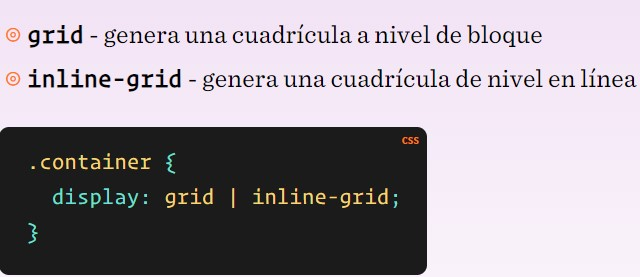Configurando el Layout en columnas y filas
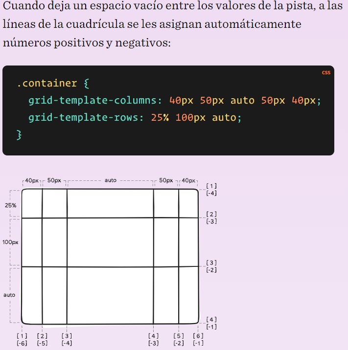La unidad fr
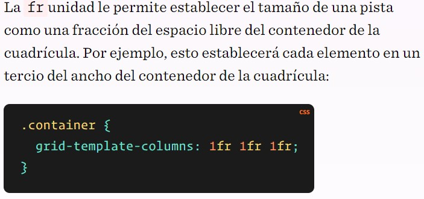áreas de plantilla de cuadrícula
Define una plantilla de cuadrícula haciendo referencia a los nombres de las áreas de cuadrícula que se especifican con la grid-areapropiedad. La repetición del nombre de un área de cuadrícula hace que el contenido abarque esas celdas. Un punto significa una celda vacía. La sintaxis en sí misma proporciona una visualización de la estructura de la cuadrícula.
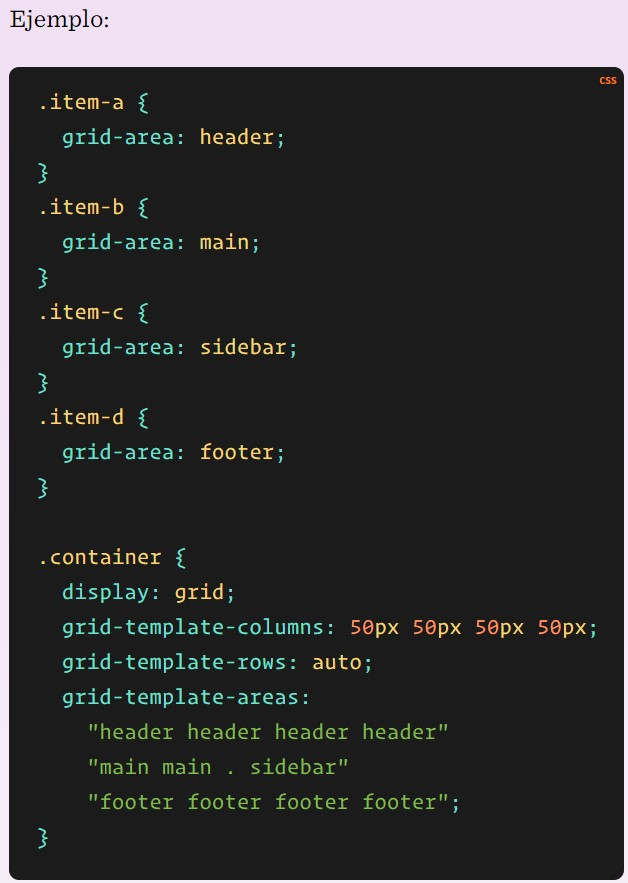 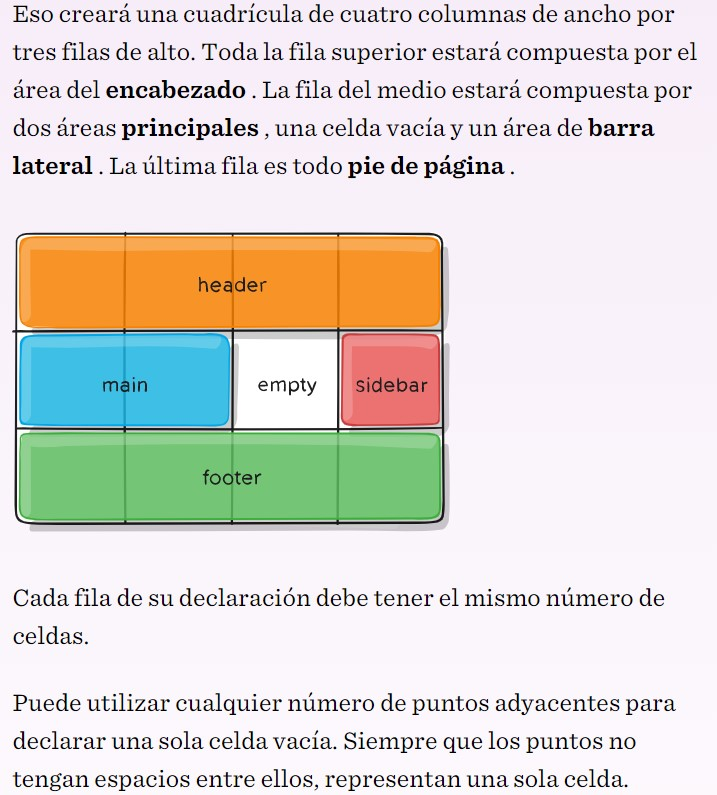espacio entre columnas espacio entre filas
Define una plantilla de cuadrícula haciendo referencia a los nombres de las áreas de cuadrícula que se especifican con la grid-areapropiedad. La repetición del nombre de un área de cuadrícula hace que el contenido abarque esas celdas. Un punto significa una celda vacía. La sintaxis en sí misma proporciona una visualización de la estructura de la cuadrícula.
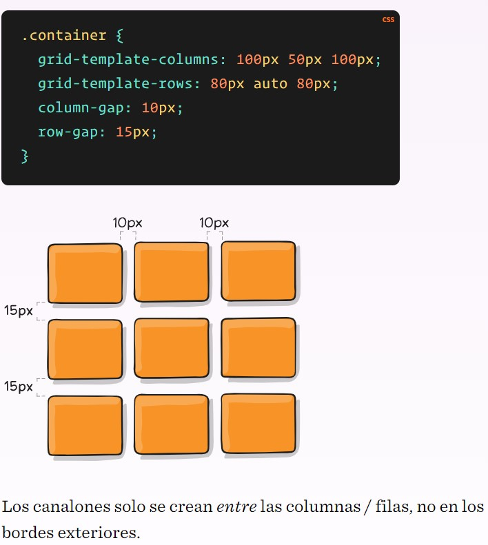Justificar elementos
Alinea los elementos de la cuadrícula a lo largo del eje en línea (fila) (en oposición al align-itemsque se alinea a lo largo del eje del bloque (columna) ). Este valor se aplica a todos los elementos de la cuadrícula dentro del contenedor.
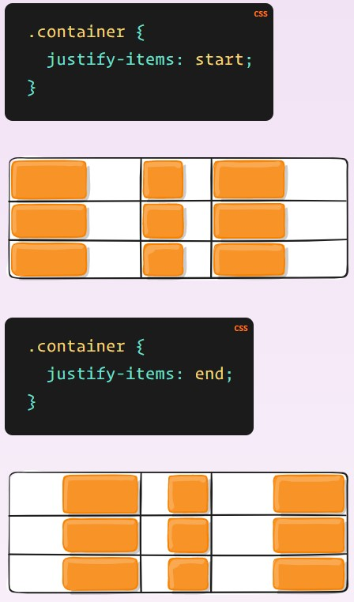 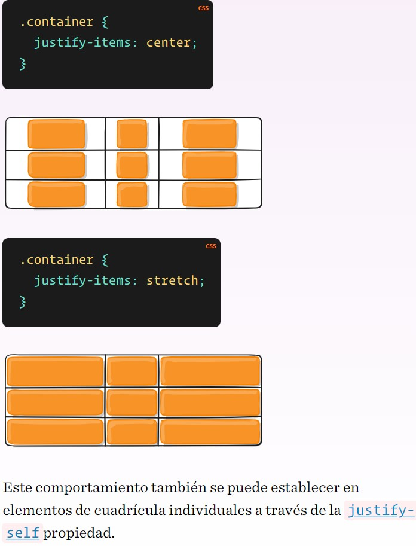Alinear elementos
Alinea los elementos de la cuadrícula a lo largo del eje del bloque (columna) (en oposición al justify-itemsque se alinea a lo largo del eje en línea (fila) ). Este valor se aplica a todos los elementos de la cuadrícula dentro del contenedor.
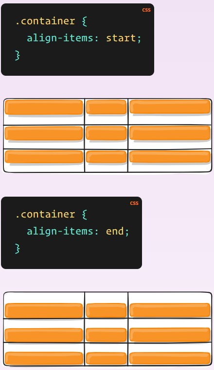 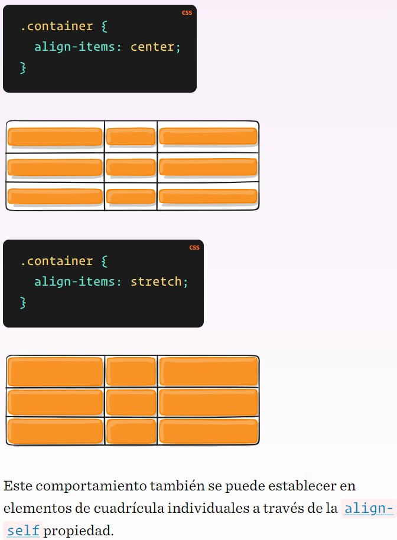Justificar Contenido
A veces, el tamaño total de su cuadrícula puede ser menor que el tamaño de su contenedor de cuadrícula. Esto podría suceder si todos los elementos de su cuadrícula tienen el tamaño de unidades no flexibles como px. En este caso, puede establecer la alineación de la cuadrícula dentro del contenedor de la cuadrícula. Esta propiedad alinea la cuadrícula a lo largo del eje en línea (fila) (a diferencia de lo align-contentque alinea la cuadrícula a lo largo del eje del bloque (columna) ).
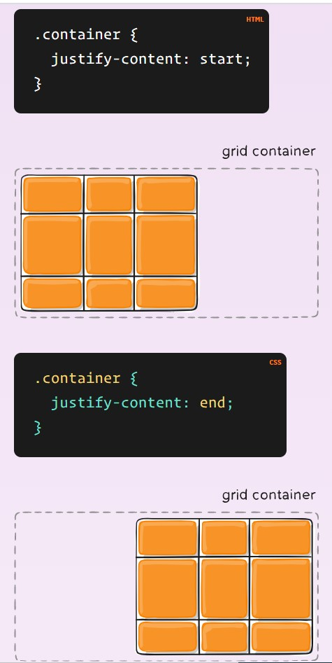 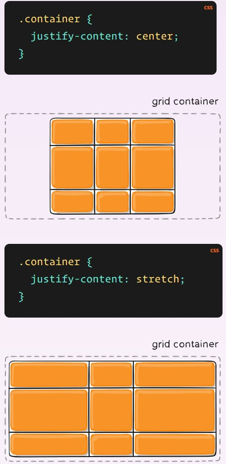 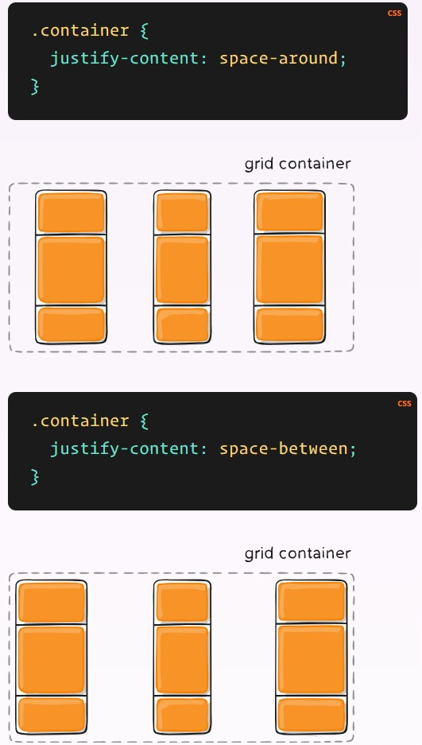 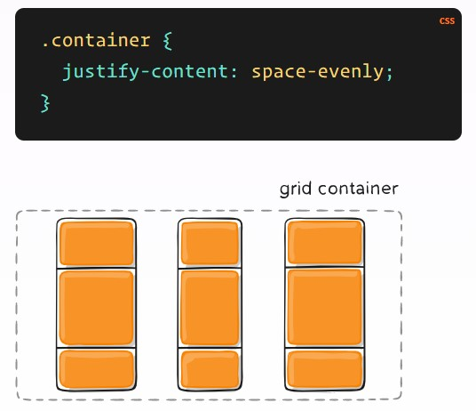Alinear Contenido
A veces, el tamaño total de su cuadrícula puede ser menor que el tamaño de su contenedor de cuadrícula. Esto podría suceder si todos los elementos de su cuadrícula tienen el tamaño de unidades no flexibles como px. En este caso, puede establecer la alineación de la cuadrícula dentro del contenedor de la cuadrícula. Esta propiedad alinea la cuadrícula a lo largo del eje del bloque (columna) (a diferencia de lo justify-contentque alinea la cuadrícula a lo largo del eje en línea (fila) ).
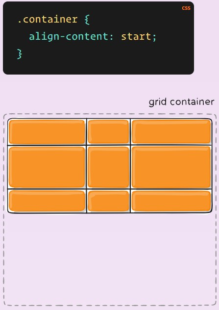 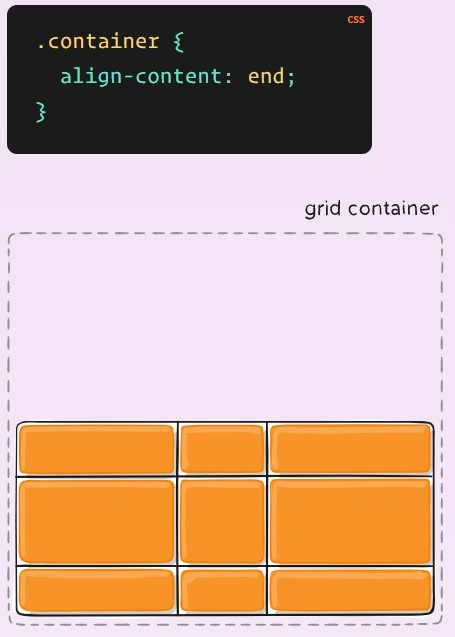 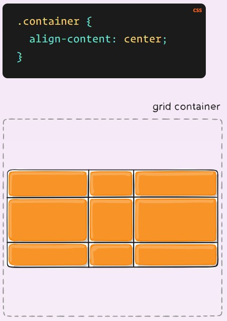 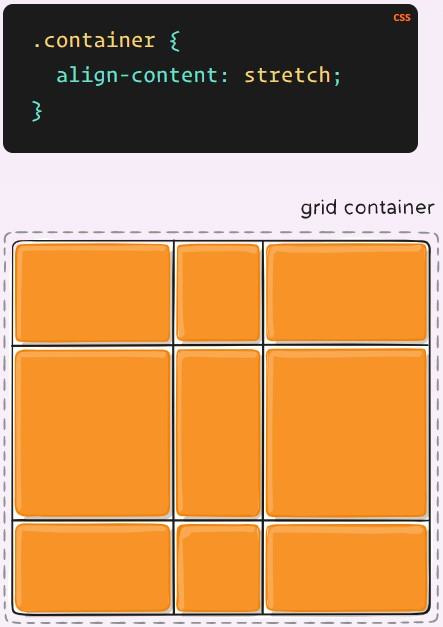 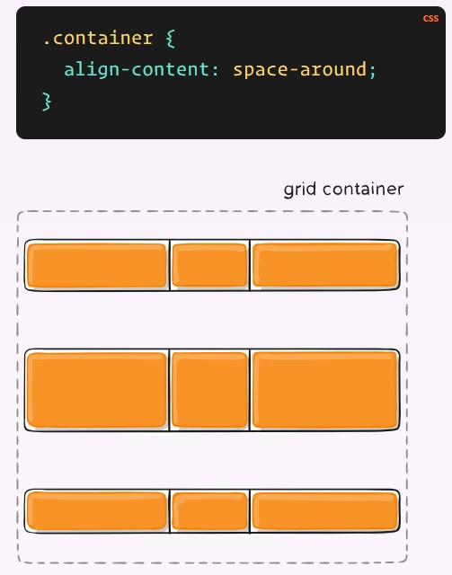 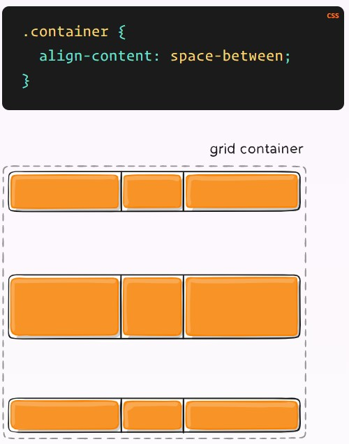 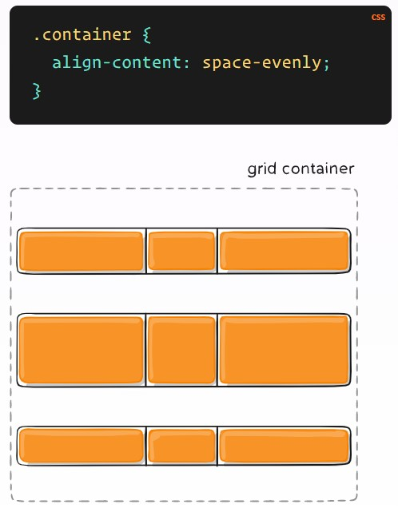